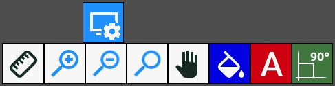
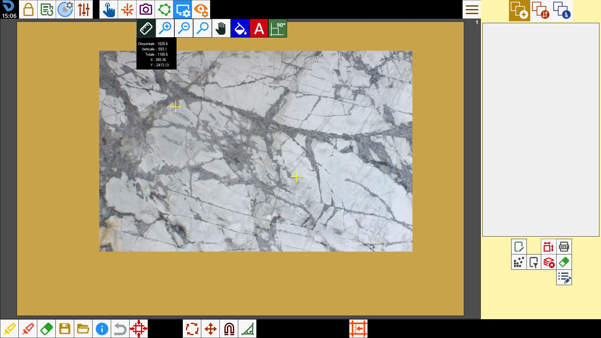

Questa funzione apre un pannellino con degli strumenti per ridimensionare l’area di lavoro.

Pulsanti
 | Righello |
 | Zoom _ |
Zoom - | |
 | Ripristina Zoom |
 | Muovi visuale |
 | Mostra / Nascondi colore di sfondo |
 | Mostra / Nascondi nome pezzi |
 | Mostra / Nascondi angoli retti |
Righello
Per utilizzare questa funzione l’operatore dovrà indicare due punti sull’area di lavoro. Questi verranno rappresentati come due croci gialle.

Sotto il pulsante del righello, comparirà un piccolo pannello che mostrerà la distanza tra i due punti.

Orizzontale | Distanza orizzontale tra il primo ed il secondo punto. |
Verticale | Distanza verticale tra il primo ed il secondo punto. |
Totale | Distanza totale tra il primo ed il secondo punto. |
X | Posizione orizzontale del mouse in tempo reale. |
Y | Posizione verticale del mouse in tempo reale. |